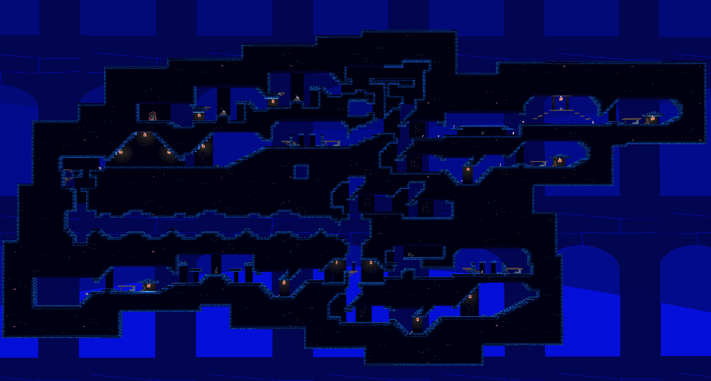

LEVEL GENERATION TIME! Oh and other stuff too.
Posted by Axol on June 13th 2023 
''that's one whole level right there!!!''
WORK IN PROGRESS!!... AS USUAL...
WORK IN PROGRESS!!... AS USUAL...
We've been very eager to show this off, what you're looking at here is ONE whole level in the game currently! ONE. LEVEL.
This couldn't have been made possible without the actual coding effort done by Micky and NIDO, good job guys!
We can play through an entire level from start to finish without any hiccups, it takes roughly 2-3 minutes to pass through one level and that is if you know where you're going.
Keeping in mind, this is without any items or enemies either, levels are estimated to be around 5-10 minutes each, you can't stick around in one spot for too long, so this likely will be as far as we can stretch it.
The Dungenerator (patent pending) is INCREDIBLY good for how admittedly primitive it is, especially considering how far we are going to take it in the near future.
The built-in Tile editor Godot has makes the stages incredibly easy and fun to make!
Maybe you could make your own someday...

''inventory system and some weapons''
WEAPON STATS SUBJECT TO CHANGE!!
WEAPON STATS SUBJECT TO CHANGE!!
Oh yeah, and the Inventory System is now fully reworked back from its former Gamemaker glory. No thanks to Gamemaker, of course.
As of writing, there are only 5 weapons and all of them do weapon-like things, such as killing enemies, making a sound when you swing them, etc etc, Standard weapon stuff.
What you're seeing on the sides of the inventory bar are special slots. The Pouch serves for the Dungeons form of currency, the Backpack is for other physical objects you can snag with your grubby little Dweller hands.
And the three slots below the bar are, respectively - Weapon equipping, Cloak equipping, and... ???
Well, you'll see it when you get it... No fun in spoiling the surprise.
Anyhow, we'll be seeing you next month! No jokes this time, we got actual things to show off. Let us know what you think on our Twitter page!

NEW STUFF!! (AND MORE TO COME)
Posted by NIDO on May 4th 2023
''fancy new lighting for the mural''
WORK IN PROGRESS!!
WORK IN PROGRESS!!
Despite claims of semi-frequent posting, we disappeared for a month to allocate some time to watch paint on the Dungeon walls dry. sorry
This delightful track by Axol plays in the humble abode of a certain red-cloaked Dweller. Many more have been made and are yet to be shared, so please look forward to jamming out the tunes with Delver.
In the first year of development, it became a habit to upload progress logs on NIDO's channel before there was a dedicated Blog and Twitter profile for the game.
As the game progressed, it began to feel unnecessary to post every single step of development in sacrifice of the surprise factor the demo will have, but a V5 progress video has been planned for eventual release.
CONCEPTION OF A NEW POSTING PLACE
Posted by NIDO on March 18th 2023
''delver patiently waiting for someone to pay him a visit''
Welcome to the updated MNSTR Shark site! I had been silently working on this for the most part of 2023 to date (a lot of time spent was occupied by Having A Snooze) so I hope it at least turned out appealing to the few people who will check it out.
More importantly, the reason to have a blog at all is that it's nice to have a non-Twittery place to drop updates, especially those less groundbreaking or directly related to the game project.
On which note, just when progress had dwindled due to the learning curve of switching game engines a year into development, we received an anonymous package at MNSTR HQ containing nothing but an anvil and the saviour we needed in the form of a blue critter named Micky.
So here's for the future of the dungeon, and the semi-realistic goal of releasing a demo this year for everybody to enjoy.